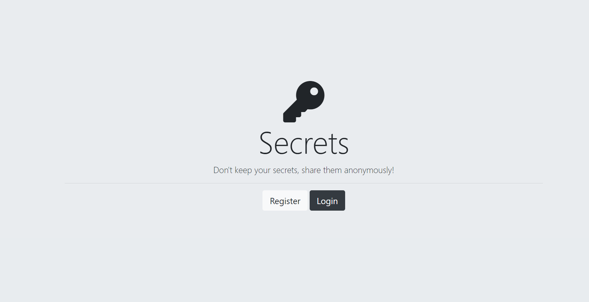
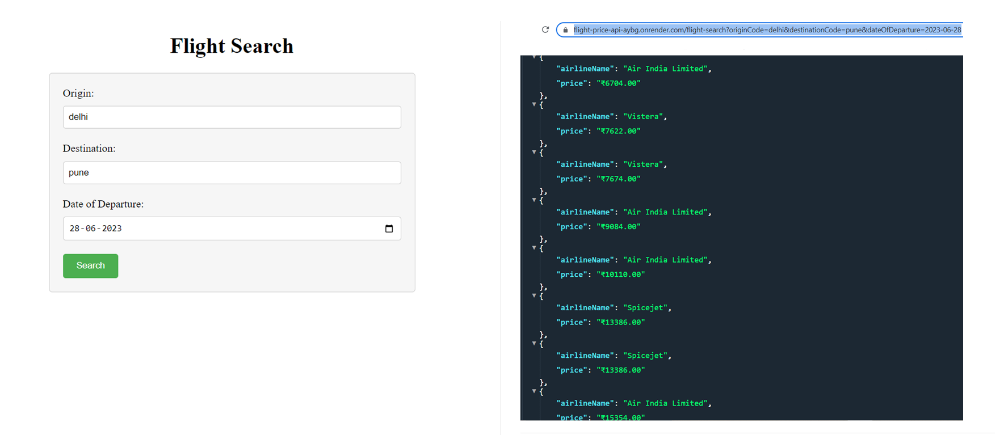
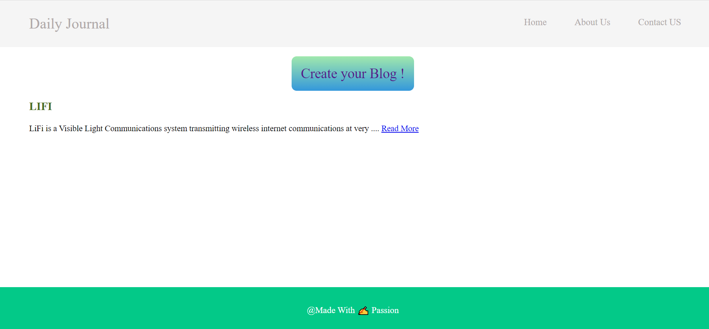
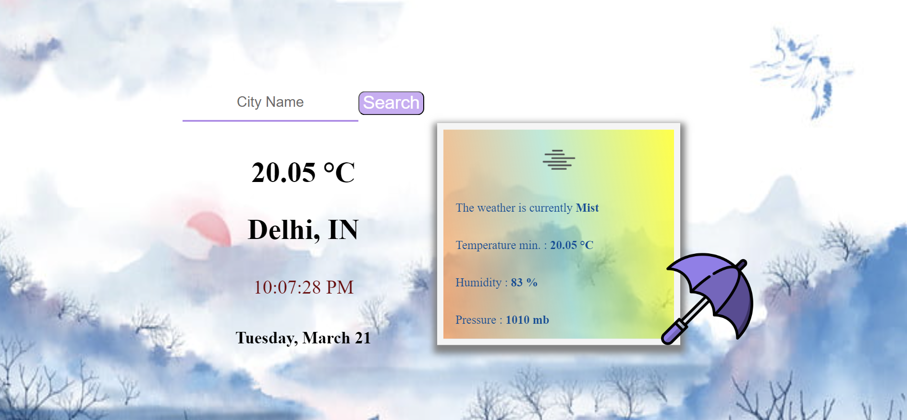
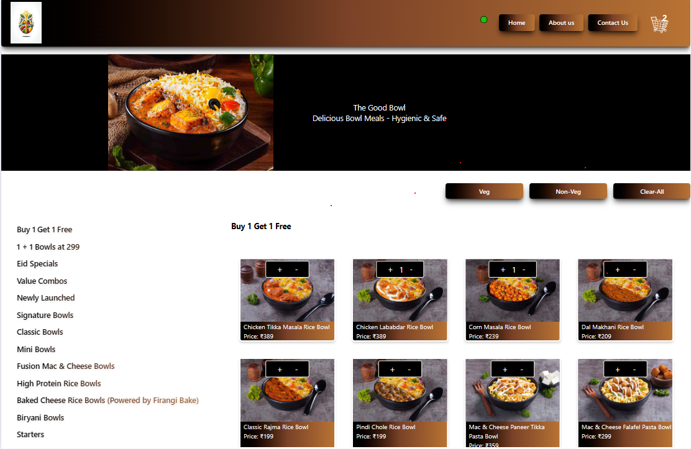
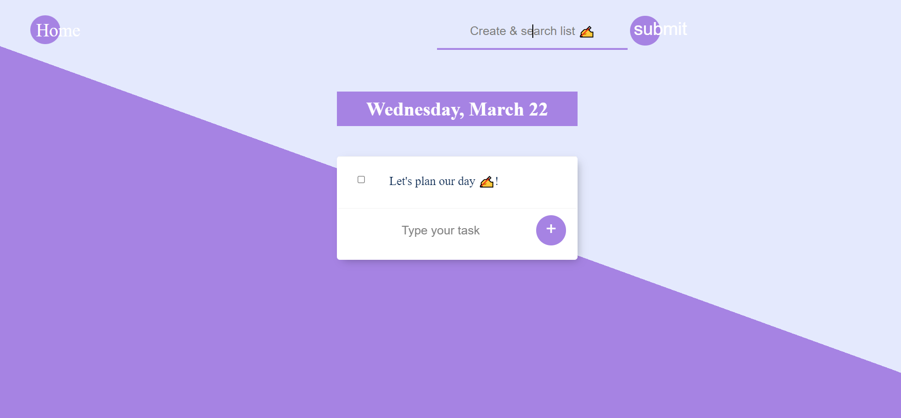
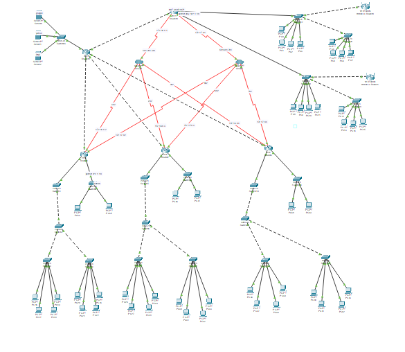

Anonymously Secret Posting Web AppDemo
Tech Stack : [ NodeJS, Express JS, MongoDB , OAuth 2.0 Authentication, login using Google and Facebook, Bootstrap ]
The app allows users to post secrets without revealing their identity, and it has OAuth 2.0 authentication with login options using Google and Facebook.

Current Flight Price REST API Demo
Tech Stack : [ NodeJS, REST API, Amadeus API Html, CSS ]
The Flight Price API, developed using Node.js and REST API, provides real-time airline fares between specified origin and destination locations.

Blog Posting Web App Demo
Tech Stack : [ NodeJS, Express JS, EJS , MongoDB ,RESTful API, HTML, CSS ]
The web application allows users to create, edit, delete and publish blog posts.

Weather Web App Demo
Tech Stack : [ NodeJS, Express JS, EJS, Vanilla JavaScript, Openweather API, Html, CSS ]
The web application utilizes the open weather API to fetch real-time weather data and provide accurate weather information to the users. The app provides a user-friendly interface that displays current weather conditions.

Food ordering Web App Demo
Tech Stack : [ React js, NodeJS, Express JS, Redux]
A full-stack web application that allows users to browse and order food from their favorite restaurants.
Designed with a clean UI, state management via Redux, and backend integration for seamless order processing.

To-do Web App Demo
Tech Stack : [ NodeJS, Express JS, EJS, MongoDB, HTML, CSS ]
The application is designed to allow users to create, delete their task, even user can create a custom list also.

University Network Architecture Github Link
Tech Stack : [ Cisco Packet Tracer (software), virtual N/w devices, LAN, WAN, OSPF, EIGRP, RIP, TCP/IP, VPN etc. ]
The "University Network" is a simulation of a computer network designed using Cisco Packet Tracer software, to provide a secure communication infrastructure for a university connected over WAN & LAN. The project includes routers, switches and other network devices to facilitate connectivity between various departments and enable secure access to university resources.